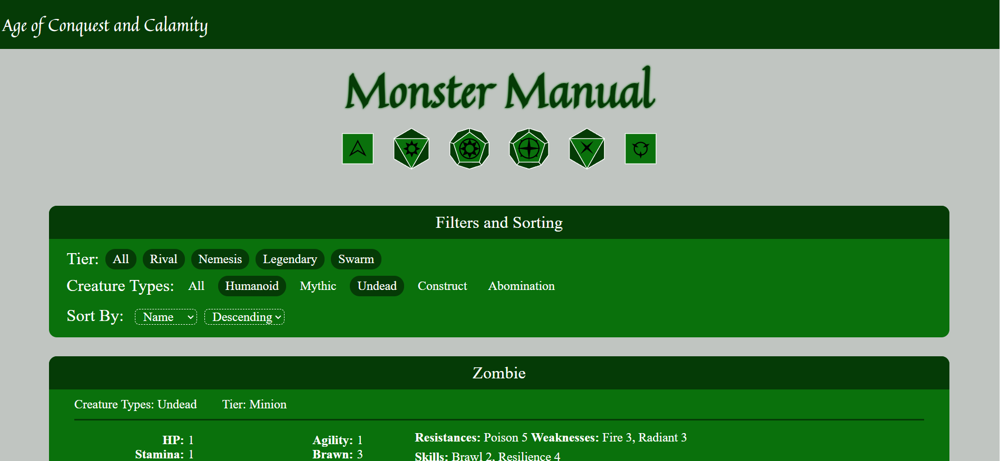

Jacob Davis
Age of Conquest and Calamity
I have been working with a group of friends for the past few years to create a game called Age of Conquest and Calamity. It is our own table top role playing game, similar to Dungeons and Dragons. This website provides players with several resources and a way to quickly and easily access all the information they will need when playing the game and it allows the game designers to quickly and easily add new content using an intuitive UI.
Live Website:
https://conquestandcalamity.up.railway.app/GitHub Page:
https://github.com/WickerPrison/AoCaCWebsiteThis website was built with React, MongoDB, Mongoose, JavaScript, CSS, and HTML.
This is a solo project.
React
Using React allowed me to reuse components to speed up development and keep my code clean. It also makes any future changes much easier, which is particularly important for this project because the game is still being designed and game design changes could very easily necessitate changes to the website.
Monster Builder
The most challenging page to program was the monster builder. Many Game Masters will want to create their own custom monsters which can be quite complicated, so I created the monster builder page to allow them to easily create and edit monsters using an intuitive UI. These monsters are then saved to the database so they can then be viewed in the monster manual and used in the encounter builder by other users.
Filters and Sorting
I created a flexible React component that is used on many pages of the website to filter and sort the contents. The component accepts JSON as a prop that contains information about what criteria should be used for filtering and sorting the items on the page. This allows the component to be reused across many pages with different filtering and sorting requirements.
Dice Roller
This game has a complex dice system featuring unique dice that are hard to find. This website has a built in dice roller to simplify the user experience. Users that have created an account can save frequently used rolls to the database.

Encounter Builder
The most complex part of this game is being the Game Master (GM) and controlling many monsters simultaneously that each have abilities and stats that need to be tracked. The Encounter Builder allows a GM to add monsters to an encounter, track the hit points and stamina of each monster, and make rolls for the monster simply by clicking on the name of the skill or weapon the creature is using. Users that have created an account can save their current encounter to the database.

Spell Builder
Players who choose to play as a wizard must build a custom spell each time they use their magical abilities. This system can be complicated for new players. The Spell Builder page walks users through casting a spell, letting them choose whatever options they want. At the end it tells them exactly what dice to roll to cast the spell and can roll the dice for them if they want.